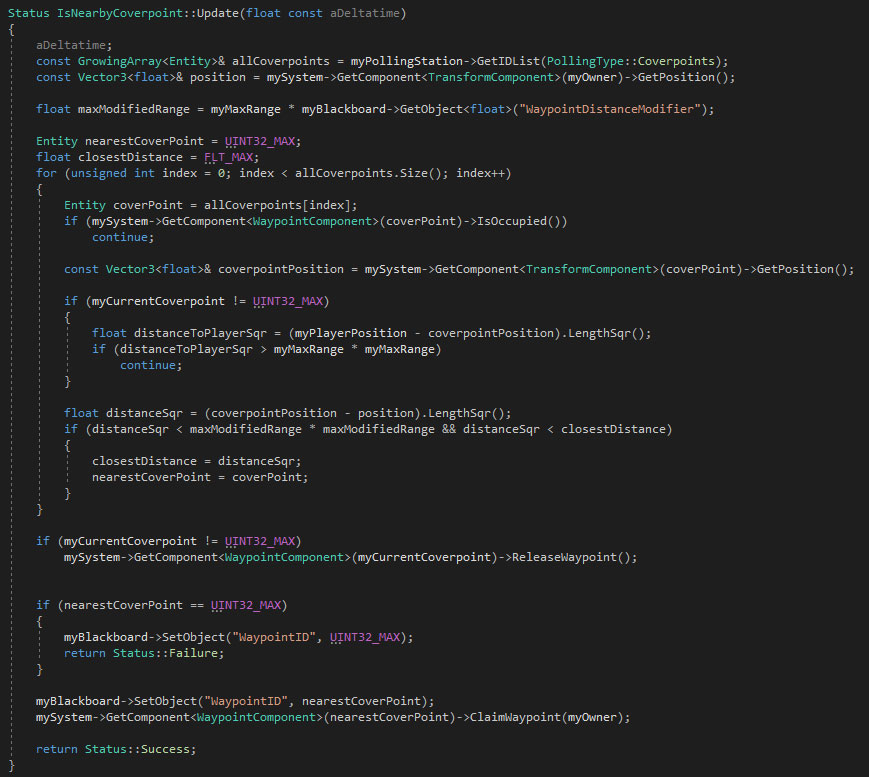

Gunbritt
C++ | FPS | AI | Pipeline | Tools
About the Game
Gunbritt was my seventh project at the Game Assembly. The game was created in our own C++ and DirectX11 engine, Yellowsnow over the span of 10 weeks at 50% work time. The projects movement reference game was Prey.
"As the company of Ikeja has been raided, the only hope left is Gunbritt, the senior cleaner who must save her beloved workplace from the danskjävlar."
Main contributions
AI
- I created both AI characters.
- Created the boss and the required behaviour tree nodes for designers to work with.
- All AI were using Behaviour Trees with different trees depending on state.
Gameplay
- Created bosses grenade projectiles that land at position of player during launch.
Pipeline and Engine
- Was part of adding base functionality of PhysX to the game project. Raycast and base actors without callbacks.
- Added prefabs and tools for level designers to place enemies and waypoints in Unity.
- Added support to randomize sprites for particles in particle emitters
Tools
- Added possibility to create and visualize flow of behaviour trees in our script editor
- I continued working on the particle editor when new features were added to the particle emitters.
Enemies
The enemies worked with multiple behaviour trees depending on what combat state they were active in, and the boss had different behaviour trees depending on phase. I find that behaviour trees often can grow huge if there are too many states to consider, so I liked splitting up the trees and switching them out when needed.
The Juggernaut enemy was simple by design. They only needed to walk towards the player, and when close enough, start shooting at the player whilest moving to a target distance. As they were more tanky due to taped pillows, they didn't need to worry about combat damage.
The base enemies were a bit more complex, as they used coverpoints in their combat logic. If they found a suitable coverpoint nearby when engaged, they would run there and use cover behind them when shooting towards the player.

Base Enemy Behaviour Tree
The picture to the left (above on mobile) shows how the behaviour tree for the base enemy looked like when the enemy is in combat. There were four different states that the enemy could be in while in combat.
- Find and moving to a new coverpoint.
- Shooting at the player from coverpoint
- Sitting at a coverpoint while player is not in line of sight
- Attacking and moving towards player without coverpoint
Finding and moving to other coverpoint. In this part the enemy first checks if it doesn't have a coverpoint. If it doesn't, the enemy does another check to see if there are any nearby coverpoints that are of use. If there is one that is close enough, the enemy moves to that coverpoint. The bool, isPlayer in the MoveTo node is a simple solution to know if the target position is the players transform or if it should collect the latest targetID entered into the behaviour tree's blackboard. In this case, the latest ID is the found coverpoint.
I posted a picture of the code for how the enemies find nearby coverpoints. They get a list of coverpoints from a polling station. The enemies loop through the coverpoints, analysing which coverpoint is the closest to the player. Enemies that are spawned via script, also have an increased range to find coverpoints. This would allow them to run further distances to coverpoints, where an example are enemies in the first level that are spawned on an upper floor and run through a door. If they already have a coverpoint (can happen in stage 3), they also check if the distance to the player is too far away.

Shooting at the player from coverpoint. The enemies would always check if the player is in range and in line of sight. If they were, they would aim towards the player and shoot, in this case, 6 times repeated. When they had shot six times, they would crouch down, reload and stand up again.
Sitting at a coverpoint while player is not in line of sight. If the enemies were sitting behind cover, and the player runs our of sight, the enemies would wait for six seconds hiding. Then, depending on the situation, the enemies would try find another coverpoint or stay put. The solution for shouldSwitchCoverpoint was depending if the player and the enemy were on different floors. If they were on different floors, the enemies would not try to move, but if they were, they would drop their coverpoint and move closer. If the enemies could not find a better suitable coverpoint, they would drop the coverpoint logic and run to the player and shoot in the open.
Attacking and moving towards player without coverpoint. If there were no suitable coverpoints nearby, the enemies would move towards the player. When they were close enough and the player in sight, they would stop and shoot towards the player. The shooting logic was almost identical to when enemies were at coverpoints. The difference being that they aimed for a shorter duration before shooting, making the first shot a lot faster.